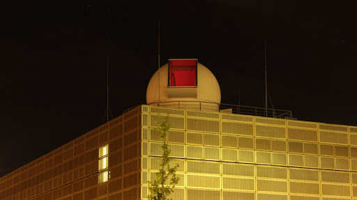

CAMK PhD Seminar, 2021
Introduction
Fergusson College (Physics, Undergrad)

Universität Potsdam (Astrophysics, MS)

CAMK Toruń
Topics of Interest
Eclipsing Binaries
Master Thesis
Some Text Here...
Work at CAMK Toruń
ETV Analysis
- One
- Two
- Three
Binary Modelling
- New
- Words
- Three
Analysis of Composite Spectra
- Two
- Three
- One
Long term goals...
Where are we headed?

Some Text Here...
Questions

- One means one one
- Two means two two
- Three means three three
- One means one one
- One means one one
- Two means two two
- One means one one
- Two means two two
- Three means three three
Some Text Here...